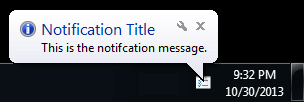

The tooltip timeout discussed in this post is not respected in current versions of Windows.
The notification area (also known as the status area or the system tray) is the region of the Windows taskbar that includes the system clock. The area is used to display icons for headless or minimised programs. It can also be used to display transient tooltip messages.
The following PowerShell code will display a balloon tooltip in the notification area. The tooltip title, message, and taskbar icon path, are required fields, and all can be customised. The tooltip timeout is also required, and must be set between 10 and 30 seconds.
# Set notification title and message.
$Title = "Notification Title"
$Message = "This is the notification message."
# How long to display the notification in milliseconds.
# Must be between 10 and 30 seconds.
$Timeout = 30000
# Balloon icon type: None, Info, Warning or Error.
$BalloonIcon = "Info"
# Path to icon to display in taskbar.
$TaskbarIconPath = "C:\Path\To\icon.ico"
[void] [System.Reflection.Assembly]::LoadWithPartialName("System.Windows.Forms")
$NotifyIcon = New-Object System.Windows.Forms.NotifyIcon
$NotifyIcon.Icon = $TaskbarIconPath
$NotifyIcon.BalloonTipTitle = $Title
$NotifyIcon.BalloonTipText = $Message
$NotifyIcon.BalloonTipIcon = $BalloonIcon
$NotifyIcon.Visible = $True
$NotifyIcon.ShowBalloonTip($Timeout)
The icon should be 16x16 pixels, although larger icons will be resampled. If you don't have access to a custom icon, just search your computer for files with an .ico extension, and select a result that suits your purpose.

If you save the code as notify.ps1, it can be run using:
powershell.exe -file notify.ps1